In order to analyze the change of vaping and other drug usage over time in NYC’s youth, we created the following animated plot:
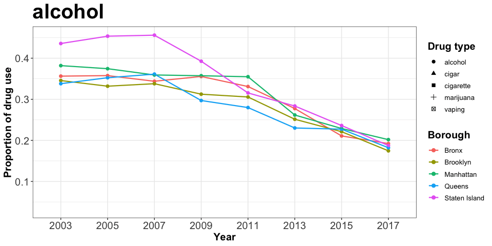
After analyzing the plot, we drew the following conclusions:
Among the five types of drugs considered, alcohol has the highest proportion in year 2003, but started decreasing in use from 2007 onwards across all five boroughs in NYC. In addition, cigarette has a lower total proportion than alcohol but a similar decreasing trend after 2009.
Cigar maintains a steady but low-proportion trend during 2003-2017, which could be compared with marijuana holding a steady but higher proportion in total. Moreover, the marijuana use in Manhattan increased from the lowest level in 2007 to the highest level in 2011 among five boroughs.
Staten Island had the highest Marijuana use over the years among all five NYC boroughs. However, in year 2017, it dropped dramatically and had the lowest proportion among all boroughs. Overall Marijuana stayed almost the same among all boroughs over the years.
Vaping, which is our main drug of interest, has a slightly increasing trend from 2015-2017. This trend is quite similar to the alcohol, cigar and cigarette trend observed from 2003 to 2005, and has a proportion about as high as the proportion observed in marijuana in 2015-2017, which indicates that it could possibliy grow into a new drug threatening public health.
In order to analyze the change of mental health status of NYC’s youth over time, we created the following animated plot:
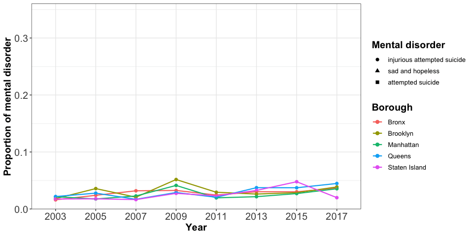
Examining this plot, we determined the following:
Teenagers, feeling sad and hopeless, constitute the highest proportion among all three mental health issues considered. Based on the considered survey data, we see that a high percentage of teenagers do not have a positive mood. The trend decreases slightly after 2009, just to pick up again in 2015. Staten Island has the lowest proportion in the reported sadness with the exception of 2011. Bronx almost alwyas has the highest proportion, and Queens fluctuates greatly.
The proportion of attempted suicide is approximately constant at about 0.1 and is higher than the proportion associated with getting injured due to an attempted suicide. Both attempted suicide and injurious attempted suicide are relatively steady over time and have about the same magnitude across all five NYC boroughs.
We were interested in whether there is a difference in drug use between female and male teenagers in different boroughs in NYC in 2017. To that end, we created the following plots:
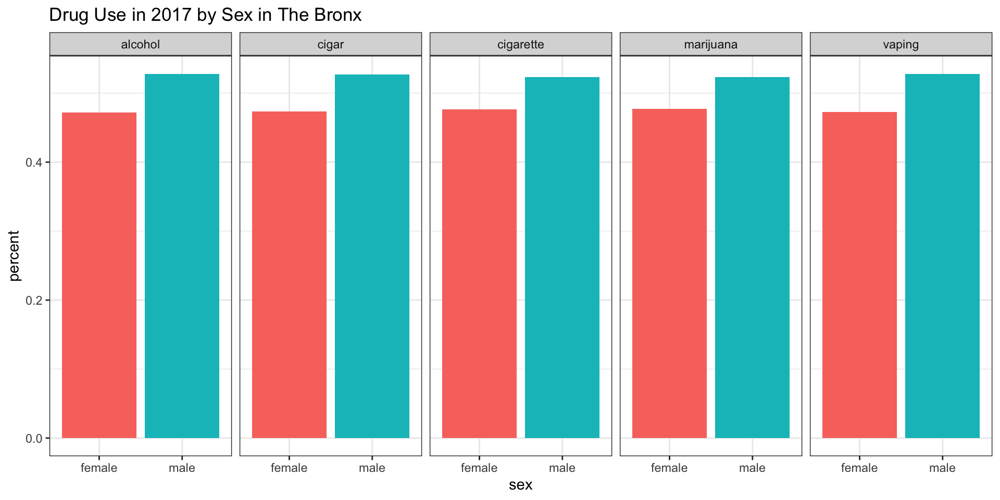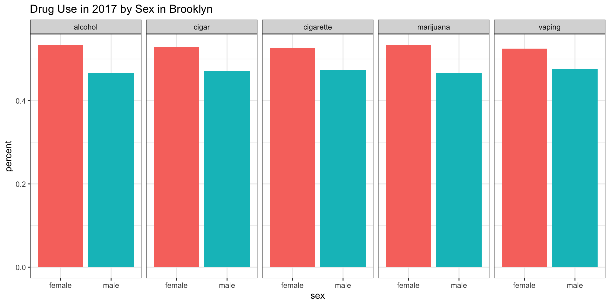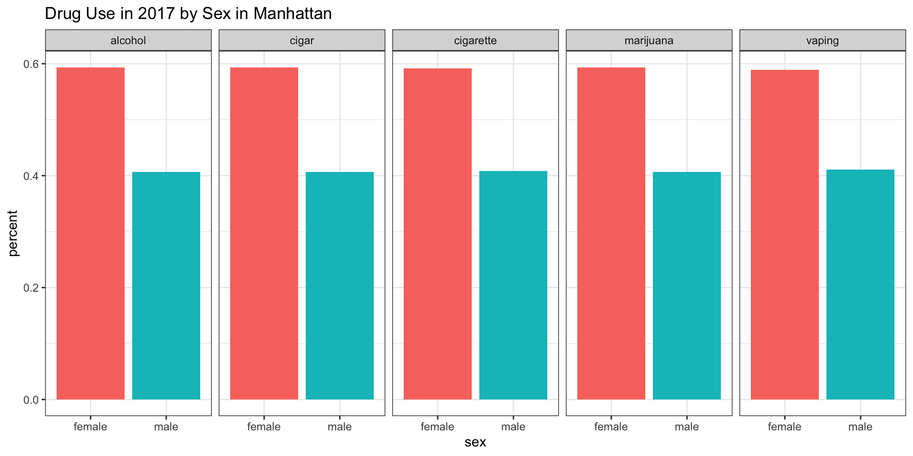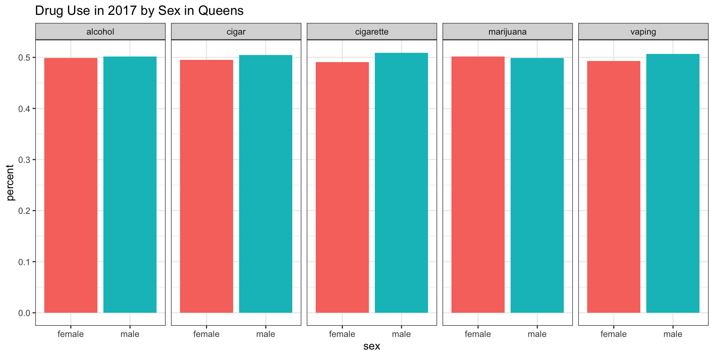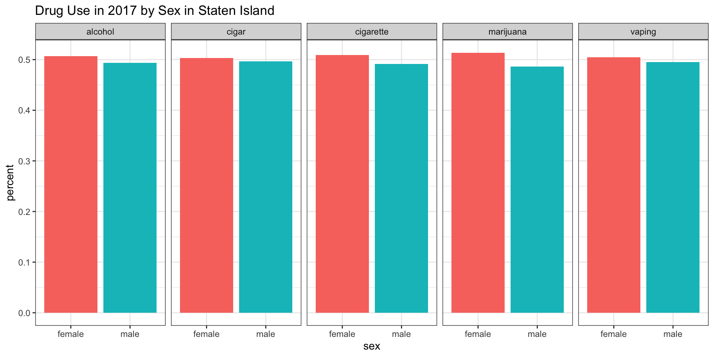
Studying these plots, we were able to derive the following results:
According to our survey data, it appears as if independent of the type of drug the proportion of male teenagers in the Bronx using a particular type of drug is higher (about 55%) compared to their female counterparts.
According to our survey data, it appears as if independent of the type of drug the proportion of female teenagers in Brooklyn using a particular type of drug is higher (about 55%) compared to their male counterparts.
According to our survey data, it appears as if independent of the type of drug the proportion of female teenagers in Manhattan using a particular type of drug is higher (almost 60%) compared to their male counterparts.
According to our survey data, it appears as if independent of the type of drug the proportion of female teenagers in Queens using a particular type of drug is about equal to the proportion of their male counterparts. A similar trend can be observed in Staten Island. However it seems as if marijuana use is slightly higher in female than in males teenagers in Staten Island.
We were interested in whether there is a difference in drug use between teenagers involved in fights and teenagers not involved in fights in different boroughs of NYC in 2017. To that end, we created the following plots:
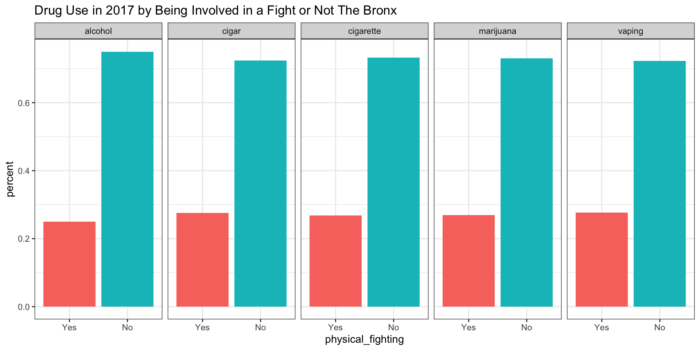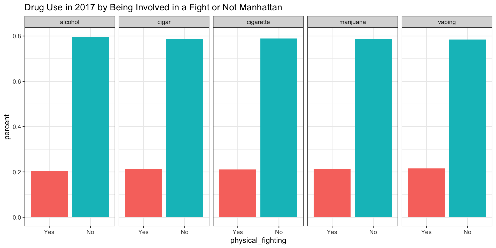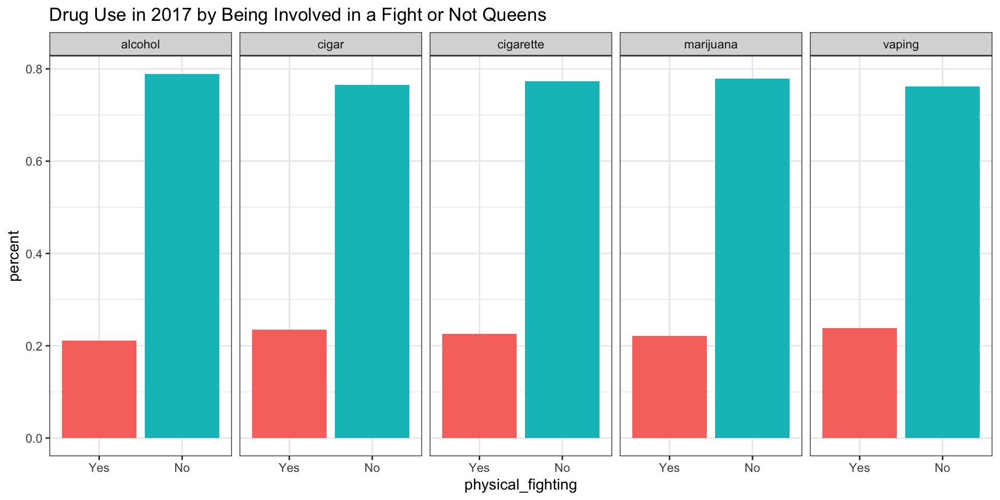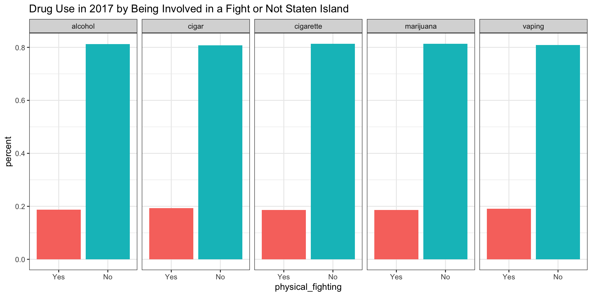
Studying these plots, we were able to derive the following result:
According to our survey data, it appears as if independent of the type of drug the proportion of teenagers involved in a fight in the Bronx is about 28%, with the exception of alcohol, for which the proportion seems to be about 25%.
The same trend can be observed in Brooklyn. The only differences appear to be that the proportions itself are a bit lower: 0.22 for alcohol and about 0.25 for the remaining types of drugs.
According to our survey data, it appears as if independent of the type of drug the proportion of teenagers involved in a fight in Manhatten is about 22%.
According to our survey data, it appears as if the proportion of teenagers involved in a fight in Queens is slightly higher for children vaping (about 0.24%) and smoking cigars (about 0,23%).
According to our survey data, it appears as if independent of the type of drug the proportion of teenagers involved in a fight in Staten Island is about 19% - the lowest proportion of all boroughs.
If this Exploratory Analysis sparked your interested, feel free to explore the data more using the Explore the Data tab on the top right corner of the website.